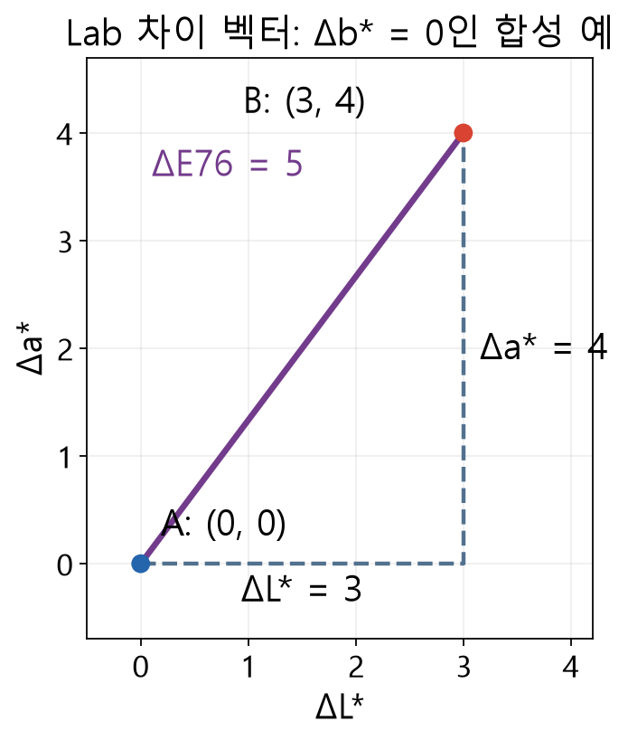

Lab 색차 계산
Lab 세 성분의 차이 (3,4,0)는 어떤 거리일까요? ΔE76은 성분 차 제곱합의 제곱근으로 5입니다.

자료에서 확인할 점
- 축은 색상 공간의 성분 차이며 픽셀 거리나 장치 위치가 아닙니다.
- 입력은 설명용 수치이며 색 변환이나 허용 기준을 검증하지 않습니다.
실제 API에 적용하기
RGB는 인코딩된 sRGB로 해석하며 선형화와 백색점 변환을 거쳐 D50 2° 기준 CIELAB을 만듭니다. Lab의 세 채널은 독립 GrayF64 영상입니다. ΔE76 = √((ΔL*)²+(Δa*)²+(Δb*)²) 는 Lab 좌표의 유클리드 거리이며 다른 색차식과 동일하지 않습니다.
조명, 노출, 화이트 밸런스와 기준색이 바뀌면 거리도 달라집니다. 합성 RGB 샘플로 채널 순서를 검증하고 실제 샘플로 허용치를 정하십시오.
기본 Lab 경로는 인코딩된 sRGB 성분을 선형 광도로 바꾼 뒤 색 좌표와 기준 백색을 적용합니다. D50 2도 기준의 L*, a*, b*는 각각 별도의 GrayF64 채널로 얻습니다. 값 배열을 그대로 유클리드 거리로 비교하는 ΔE76은 선택 가능한 한 가지 색차이며, 가중치와 색상각 보정이 있는 다른 거리식과 수치가 같다고 가정할 수 없습니다.
색 인코딩과 거리 · HSV·Lab·DeltaE76에서 함수 선언, 인자와 반환 결과를 확인하세요.
설명과 실행 결과의 범위
수치와 도형은 연결된 계약의 핵심 관계를 설명하는 예입니다. 실제 SDK 출력으로 명시한 자료를 제외하면 실행 결과나 장비 실측으로 해석하지 않습니다. 좌표계·입력 형식·수명과 오류 조건은 관련 API 계약을 확인한 뒤 적용하세요.